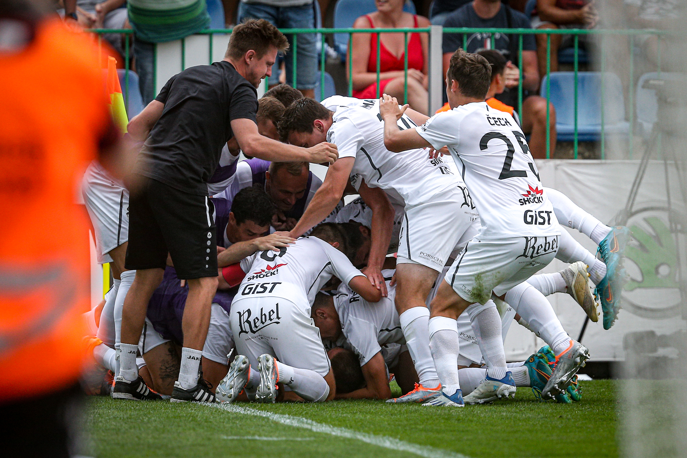

FC Hradec Králové je český profesionální fotbalový klub, který sídlí v Hradci Králové. Ve své historii vyhrál jedenkrát českolovenský ligový titul a jedenkrát český fotbalový pohár. Tým hraje nejvyšší českou soutěž 1. českou fotbalovou ligu. Dokud nebude dostavěn stadion Malšovická aréna, bude klub sehrávat svá domácí utkání na Městském stadioně Mladá Boleslav. Klubové barvy jsou černá a bílá. Založen byl v roce 1905 pod názvem SK Hradec Králové. Svůj současný název nese od roku 2005.
Kde nás najdete
Prodej vstupenek
Zadejte své údaje a my vám pošleme email
Hradec Králové patří mezi kluby s bohatou historií. Největší úspěch zažili Votroci v sezóně 1959/60,
kdy získali svůj jedniný ligový titul, rok na to je čekalo úspěšné tažení v PMEZ, kde je zastavila až Barcelona ve čtvrtfinále.
Do uplnulé sezony šel Hradec jako nováček pod vedením velezkušeného kouče Miroslava Koubka. Hradec předčil všechna očekávání,
umístil se na 6. místě a dostal se do semifinále Mol cupu. Dokázal porazit Slavii i Plzeň. Domácí zápasy hraje Hradec v Mladé Boleslavi a
stavba vlastního stadionu se mu komplikuje. Vypadá to, že se kvůli rostoucím cenám projekt prodraží. Hrozí i nedoržení termínu dokončení - jaro 2023.